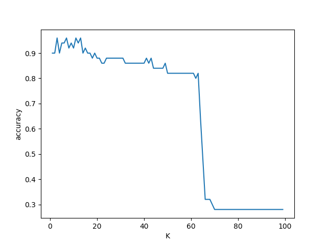

K-Nearest Neighbors dengan Python dan Scikit-Learn¶
Pengertian K-Nearest Neighbors (KNN)¶
K-Nearest Neighbors atau KNN adalah algoritma yang berfungsi untuk melakukan klasifikasi suatu data berdasarkan data pembelajaran (train data sets), yang diambil dari k tetangga terdekatnya (nearest neighbors). Dengan k merupakan banyaknya tetangga terdekat.
Metode klasifikasi K-Nearest-Neighbors (KNN) adalah salah satu metode paling sederhana dan merupakan cara terbaik untuk memperkenalkan diri pada pembelajaran klasifikasi secara umum. Pada tingkat paling dasar, pada dasarnya klasifikasi dengan menemukan titik data yang paling mirip dalam data training, dan membuat tebakan yang dididik berdasarkan klasifikasi mereka. Meskipun sangat sederhana untuk dipahami dan diimplementasikan, metode ini telah melihat aplikasi luas di banyak domain, seperti dalam sistem rekomendasi, pencarian semantik, dan deteksi anomali.
Saya akan menggunakan set data iris. Ini adalah kumpulan data kecil dengan kelompok yang mudah dibedakan yang sangat berguna untuk demonstrasi seperti ini. Ini berisi 150 pengamatan tanaman iris dari tiga spesies: setosa, versicolor, dan virginica. Tugasnya adalah mengidentifikasi spesies masing-masing tanaman berdasarkan tetangga terdekat mereka.
CARA KERJA K-NN¶
Klasifikasi Terdekat (Nearest Neighbor Classification)¶
Data baru yang diklasifikasi selanjutnya diproyeksikan pada ruang dimensi banyak yang telah memuat titik-titik c data pembelajaran. Proses klasifikasi dilakukan dengan mencari titik c terdekat dari c-baru (nearest neighbor). Teknik pencarian tetangga terdekat yang umum dilakukan dengan menggunakan formula jarak euclidean*.* Berikut beberapa formula yang digunakan dalam algoritma knn.
Euclidean Distance : Jarak Euclidean adalah formula untuk mencari jarak antara 2 titik dalam ruang dua dimensi.

Banyaknya k Tetangga Terdekat¶
Untuk menggunakan algoritma k nearest neighbors, perlu ditentukan banyaknya k tetangga terdekat yang digunakan untuk melakukan klasifikasi data baru. Banyaknya k, sebaiknya merupakan angka ganjil, misalnya k = 1, 2, 3, dan seterusnya. Penentuan nilai k dipertimbangkan berdasarkan banyaknya data yang ada dan ukuran dimensi yang dibentuk oleh data. Semakin banyak data yang ada, angka k yang dipilih sebaiknya semakin rendah. Namun, semakin besar ukuran dimensi data, angka k yang dipilih sebaiknya semakin tinggi.
Algoritma K-Nearest Neighbors¶
- Menentukan secara acak K titik data sebagai pusat cluster yang disebut centroid dengan setiap contoh data training.
- Untuk menghitungnya, ukuran jarak seperti jarak Euclidean yang akan digunakan.
- Model mengambil entri K dalam database yang paling dekat dengan titik data baru.
- Kemudian ia melakukan voting mayoritas yaitu kelas / label paling umum di antara entri K tersebut adalah kelas dari titik data baru.
Langkah-langkah Klasifikasi KNN pada Dataset Iris¶
Langkah1: Impor data yang diperlukan dan periksa fitur-fiturnya.
Impor fungsi load_iris dari modul dataset dataset scikit-learn dan buat objek Bunch iris (bunch adalah tipe objek khusus scikit-learn untuk menyimpan kumpulan data dan atributnya).
from sklearn import datasets import pandas as pd from sklearn.linear_model import logistic_regression_path iris=datasets.load_iris()
Untuk menampilkan datanya :
print(iris.data)
[[5.1 3.5 1.4 0.2] [4.9 3. 1.4 0.2] [4.7 3.2 1.3 0.2] [4.6 3.1 1.5 0.2] [5. 3.6 1.4 0.2] [5.4 3.9 1.7 0.4] [4.6 3.4 1.4 0.3] [5. 3.4 1.5 0.2] [4.4 2.9 1.4 0.2] [4.9 3.1 1.5 0.1] [5.4 3.7 1.5 0.2] [4.8 3.4 1.6 0.2] [4.8 3. 1.4 0.1] [4.3 3. 1.1 0.1] [5.8 4. 1.2 0.2] [5.7 4.4 1.5 0.4] [5.4 3.9 1.3 0.4] [5.1 3.5 1.4 0.3] [5.7 3.8 1.7 0.3] [5.1 3.8 1.5 0.3] [5.4 3.4 1.7 0.2] [5.1 3.7 1.5 0.4] [4.6 3.6 1. 0.2] [5.1 3.3 1.7 0.5] [4.8 3.4 1.9 0.2] [5. 3. 1.6 0.2] [5. 3.4 1.6 0.4] [5.2 3.5 1.5 0.2] [5.2 3.4 1.4 0.2] [4.7 3.2 1.6 0.2] [4.8 3.1 1.6 0.2] [5.4 3.4 1.5 0.4] [5.2 4.1 1.5 0.1] [5.5 4.2 1.4 0.2] [4.9 3.1 1.5 0.2] [5. 3.2 1.2 0.2] [5.5 3.5 1.3 0.2] [4.9 3.6 1.4 0.1] [4.4 3. 1.3 0.2] [5.1 3.4 1.5 0.2] [5. 3.5 1.3 0.3] [4.5 2.3 1.3 0.3] [4.4 3.2 1.3 0.2] [5. 3.5 1.6 0.6] [5.1 3.8 1.9 0.4] [4.8 3. 1.4 0.3] [5.1 3.8 1.6 0.2] [4.6 3.2 1.4 0.2] [5.3 3.7 1.5 0.2] [5. 3.3 1.4 0.2] [7. 3.2 4.7 1.4] [6.4 3.2 4.5 1.5] [6.9 3.1 4.9 1.5] [5.5 2.3 4. 1.3] [6.5 2.8 4.6 1.5] [5.7 2.8 4.5 1.3] [6.3 3.3 4.7 1.6] [4.9 2.4 3.3 1. ] [6.6 2.9 4.6 1.3] [5.2 2.7 3.9 1.4] [5. 2. 3.5 1. ] [5.9 3. 4.2 1.5] [6. 2.2 4. 1. ] [6.1 2.9 4.7 1.4] [5.6 2.9 3.6 1.3] [6.7 3.1 4.4 1.4] [5.6 3. 4.5 1.5] [5.8 2.7 4.1 1. ] [6.2 2.2 4.5 1.5] [5.6 2.5 3.9 1.1] [5.9 3.2 4.8 1.8] [6.1 2.8 4. 1.3] [6.3 2.5 4.9 1.5] [6.1 2.8 4.7 1.2] [6.4 2.9 4.3 1.3] [6.6 3. 4.4 1.4] [6.8 2.8 4.8 1.4] [6.7 3. 5. 1.7] [6. 2.9 4.5 1.5] [5.7 2.6 3.5 1. ] [5.5 2.4 3.8 1.1] [5.5 2.4 3.7 1. ] [5.8 2.7 3.9 1.2] [6. 2.7 5.1 1.6] [5.4 3. 4.5 1.5] [6. 3.4 4.5 1.6] [6.7 3.1 4.7 1.5] [6.3 2.3 4.4 1.3] [5.6 3. 4.1 1.3] [5.5 2.5 4. 1.3] [5.5 2.6 4.4 1.2] [6.1 3. 4.6 1.4] [5.8 2.6 4. 1.2] [5. 2.3 3.3 1. ] [5.6 2.7 4.2 1.3] [5.7 3. 4.2 1.2] [5.7 2.9 4.2 1.3] [6.2 2.9 4.3 1.3] [5.1 2.5 3. 1.1] [5.7 2.8 4.1 1.3] [6.3 3.3 6. 2.5] [5.8 2.7 5.1 1.9] [7.1 3. 5.9 2.1] [6.3 2.9 5.6 1.8] [6.5 3. 5.8 2.2] [7.6 3. 6.6 2.1] [4.9 2.5 4.5 1.7] [7.3 2.9 6.3 1.8] [6.7 2.5 5.8 1.8] [7.2 3.6 6.1 2.5] [6.5 3.2 5.1 2. ] [6.4 2.7 5.3 1.9] [6.8 3. 5.5 2.1] [5.7 2.5 5. 2. ] [5.8 2.8 5.1 2.4] [6.4 3.2 5.3 2.3] [6.5 3. 5.5 1.8] [7.7 3.8 6.7 2.2] [7.7 2.6 6.9 2.3] [6. 2.2 5. 1.5] [6.9 3.2 5.7 2.3] [5.6 2.8 4.9 2. ] [7.7 2.8 6.7 2. ] [6.3 2.7 4.9 1.8] [6.7 3.3 5.7 2.1] [7.2 3.2 6. 1.8] [6.2 2.8 4.8 1.8] [6.1 3. 4.9 1.8] [6.4 2.8 5.6 2.1] [7.2 3. 5.8 1.6] [7.4 2.8 6.1 1.9] [7.9 3.8 6.4 2. ] [6.4 2.8 5.6 2.2] [6.3 2.8 5.1 1.5] [6.1 2.6 5.6 1.4] [7.7 3. 6.1 2.3] [6.3 3.4 5.6 2.4] [6.4 3.1 5.5 1.8] [6. 3. 4.8 1.8] [6.9 3.1 5.4 2.1] [6.7 3.1 5.6 2.4] [6.9 3.1 5.1 2.3] [5.8 2.7 5.1 1.9] [6.8 3.2 5.9 2.3] [6.7 3.3 5.7 2.5] [6.7 3. 5.2 2.3] [6.3 2.5 5. 1.9] [6.5 3. 5.2 2. ] [6.2 3.4 5.4 2.3] [5.9 3. 5.1 1.8]]
Untuk memeriksa fitur-fiturnya :
print(iris.target)
[0 0 0 0 0 0 0 0 0 0 0 0 0 0 0 0 0 0 0 0 0 0 0 0 0 0 0 0 0 0 0 0 0 0 0 0 0 0 0 0 0 0 0 0 0 0 0 0 0 0 1 1 1 1 1 1 1 1 1 1 1 1 1 1 1 1 1 1 1 1 1 1 1 1 1 1 1 1 1 1 1 1 1 1 1 1 1 1 1 1 1 1 1 1 1 1 1 1 1 1 2 2 2 2 2 2 2 2 2 2 2 2 2 2 2 2 2 2 2 2 2 2 2 2 2 2 2 2 2 2 2 2 2 2 2 2 2 2 2 2 2 2 2 2 2 2 2 2 2 2]
Langkah2: Membagi data dan Menggunakan Model.
Pelatihan dan pengujian pada data yang sama bukanlah pendekatan yang optimal, jadi kami membagi data menjadi dua bagian, training, dan testing. Kami menggunakan fungsi ‘train_test_split’ untuk membagi data.
from sklearn.model_selection import train_test_split x_train, x_test, y_train, y_test=train_test_split(iris.data,iris.target,test_size=0.33)
Impor kelas ‘KNeighborsClassifer’ dari modul ‘neighbors’ di sklearn. Parameter ‘n_neighbors’ adalah parameter tuning / hyperparameter (k). Semua parameter lain diatur ke nilai default. Metode ‘fit’ digunakan untuk melatih model mengenai data pelatihan (X_train, y_train) dan metode ‘predict’ untuk melakukan pengujian pada data pengujian (X_test).
from sklearn.neighbors import KNeighborsClassifier clf=KNeighborsClassifier(n_neighbors=3).fit(x_train,y_train)
Kemudian atur untuk melihat poin akurasi-nya :
from sklearn.metrics import accuracy_score print("accuracy is ") print(accuracy_score(y_test,clf.predict(x_test)))
accuracy is 0.96
Plot akurasi pengujian yang sesuai menggunakan perpustakaan matplotlib. Seperti yang dapat kita lihat ada peningkatan dan penurunan akurasi dan itu cukup khas ketika memeriksa kompleksitas model dengan akurasi.
import matplotlib.pyplot as plt accuracy_values=[] for x in range(1,x_train.shape[0]): clf=KNeighborsClassifier(n_neighbors=x).fit(x_train,y_train) accuracy=accuracy_score(y_test,clf.predict(x_test)) accuracy_values.append([x,accuracy]) pass import numpy as np accuracy_values=np.array(accuracy_values) plt.plot(accuracy_values[:,0],accuracy_values[:,1]) plt.xlabel("K") plt.ylabel("accuracy") plt.show()

Secara umum akurasi training meningkat seiring dengan meningkatnya kompleksitas model, untuk KNN kompleksitas model ditentukan oleh nilai K. Nilai K yang lebih besar mengarah ke batas keputusan yang lebih halus (model yang kurang kompleks). K yang lebih kecil mengarah ke model yang lebih kompleks.
Terima kasih telah membaca dan beri tahu kami saran / koreksi Anda jika ada.